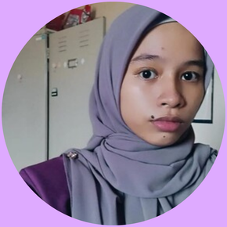

♡❀˖⁺. ༶ WELCOME TO SYAHIRAH'S E-RESUME WEBSITE !⋆˙⊹❀♡

╚══《MY PROFILE》══╝
NUR SYAHIRAH BINTI MOHD YUSOF
2022857812
DIPLOMA IN LIBRARY INFORMATICS
SCHOOL OF INFORMATION SCIENCE, COLLEGE OF COMPUTING, INFORMATICS AND MEDIA
UNIVERSITY TEKNOLOGI MARA (UITM), CAWANGAN KEDAH, SUNGAI PETANI
A lot of the people around me were actually surprised when I said that I majored in library informatics to continue my studies at university.
Most of them actually thought that I would pursue my career as a police officer because I was always active in school extracurriculars where I used to be a police cadet.
The reason I choose to continue my studies and take this major and not pursue a career as a police officer is because I realize that my height is not enough to become a police officer as they have a certain height that they want in a police officer.
After all, learning something like cataloging, coding and something related to record management or library is also quite interesting.
As a student majoring in library informatics who is now in his fourth semester, it is very important for me to study the IML254 subject.
Not to mention that this subject helped me to know the importance of the World Wide Web that allows web applications to manage information online as well as to learn skills and techniques in creating informative websites.